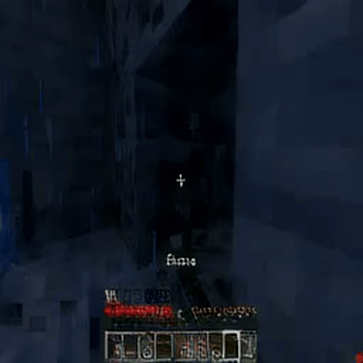

Digital AI Clone Capstone Project

Generated Video of Minecraft gameplay from our multimodal diffusion model

Another Generated Video from our Minecraft model

Overview
A comprehensive AI project exploring multimodal diffusion models for generating coherent audio, video, and agent behavior. Work completed as part of a capstone project working with Frank Wood's PLAI group at UBC.
Technical Details
- Developed unconditional audio diffusion models based on state-of-the-art architectures
- Created and trained custom video autoencoder for efficient representation learning
- Implemented multimodal diffusion agent for Minecraft gameplay
- Developed Novel multimodal diffusion model tying together video audio and player action using long range diffusion
Technologies Used
- PyTorch for deep learning implementation
- High Performance Computing clusters for training
- Custom diffusion architectures based off previous work from the PLAI group